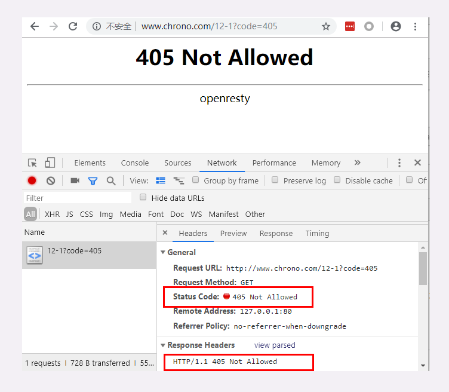
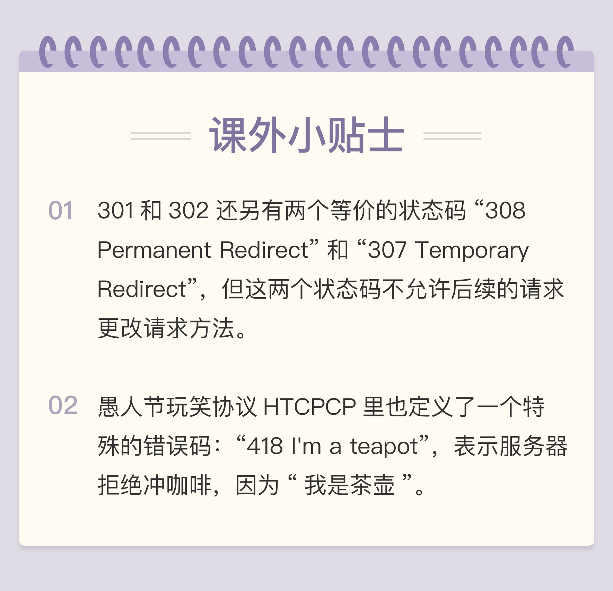

- 00 开篇词｜To Be a HTTP Hero.md.html
- 01 时势与英雄：HTTP的前世今生.md.html
- 02 HTTP是什么？HTTP又不是什么？.md.html
- 03 HTTP世界全览（上）：与HTTP相关的各种概念.md.html
- 04 HTTP世界全览（下）：与HTTP相关的各种协议.md.html
- 05 常说的“四层”和“七层”到底是什么？“五层”“六层”哪去了？.md.html
- 06 域名里有哪些门道？.md.html
- 07 自己动手，搭建HTTP实验环境.md.html
- 08 键入网址再按下回车，后面究竟发生了什么？.md.html
- 09 HTTP报文是什么样子的？.md.html
- 10 应该如何理解请求方法？.md.html
- 11 你能写出正确的网址吗？.md.html
- 12 响应状态码该怎么用？.md.html
- 13 HTTP有哪些特点？.md.html
- 14 HTTP有哪些优点？又有哪些缺点？.md.html
- 15 海纳百川：HTTP的实体数据.md.html
- 16 把大象装进冰箱：HTTP传输大文件的方法.md.html
- 17 排队也要讲效率：HTTP的连接管理.md.html
- 18 四通八达：HTTP的重定向和跳转.md.html
- 19 让我知道你是谁：HTTP的Cookie机制.md.html
- 20 生鲜速递：HTTP的缓存控制.md.html
- 21 良心中间商：HTTP的代理服务.md.html
- 22 冷链周转：HTTP的缓存代理.md.html
- 23 HTTPS是什么？SSLTLS又是什么？.md.html
- 24 固若金汤的根本（上）：对称加密与非对称加密.md.html
- 25 固若金汤的根本（下）：数字签名与证书.md.html
- 26 信任始于握手：TLS1.2连接过程解析.md.html
- 27 更好更快的握手：TLS1.3特性解析.md.html
- 28 连接太慢该怎么办：HTTPS的优化.md.html
- 29 我应该迁移到HTTPS吗？.md.html
- 30 时代之风（上）：HTTP2特性概览.md.html
- 31 时代之风（下）：HTTP2内核剖析.md.html
- 32 未来之路：HTTP3展望.md.html
- 33 我应该迁移到HTTP2吗？.md.html
- 34 Nginx：高性能的Web服务器.md.html
- 35 OpenResty：更灵活的Web服务器.md.html
- 36 WAF：保护我们的网络服务.md.html
- 37 CDN：加速我们的网络服务.md.html
- 38 WebSocket：沙盒里的TCP.md.html
- 39 HTTP性能优化面面观（上）.md.html
- 40 HTTP性能优化面面观（下）.md.html
- 结束语 做兴趣使然的Hero.md.html
12 响应状态码该怎么用？
前两讲中，我们学习了 HTTP 报文里请求行的组成部分，包括请求方法和 URI。有了请求行，加上后面的头字段就形成了请求头，可以通过 TCP/IP 协议发送给服务器。
服务器收到请求报文，解析后需要进行处理，具体的业务逻辑多种多样，但最后必定是拼出一个响应报文发回客户端。
响应报文由响应头加响应体数据组成，响应头又由状态行和头字段构成。
我们先来复习一下状态行的结构，有三部分：

开头的 Version 部分是 HTTP 协议的版本号，通常是 HTTP/1.1，用处不是很大。
后面的 Reason 部分是原因短语，是状态码的简短文字描述，例如“OK”“Not Found”等等，也可以自定义。但它只是为了兼容早期的文本客户端而存在，提供的信息很有限，目前的大多数客户端都会忽略它。
所以，状态行里有用的就只剩下中间的状态码（Status Code）了。它是一个十进制数字，以代码的形式表示服务器对请求的处理结果，就像我们通常编写程序时函数返回的错误码一样。
不过你要注意，它的名字是“状态码”而不是“错误码”。也就是说，它的含义不仅是错误，更重要的意义在于表达 HTTP 数据处理的“状态”，客户端可以依据代码适时转换处理状态，例如继续发送请求、切换协议，重定向跳转等，有那么点 TCP 状态转换的意思。
状态码
目前 RFC 标准里规定的状态码是三位数，所以取值范围就是从 000 到 999。但如果把代码简单地从 000 开始顺序编下去就显得有点太“low”，不灵活、不利于扩展，所以状态码也被设计成有一定的格式。
RFC 标准把状态码分成了五类，用数字的第一位表示分类，而 0~99 不用，这样状态码的实际可用范围就大大缩小了，由 000~999 变成了 100~599。
这五类的具体含义是：
- 1××：提示信息，表示目前是协议处理的中间状态，还需要后续的操作；
- 2××：成功，报文已经收到并被正确处理；
- 3××：重定向，资源位置发生变动，需要客户端重新发送请求；
- 4××：客户端错误，请求报文有误，服务器无法处理；
- 5××：服务器错误，服务器在处理请求时内部发生了错误。
在 HTTP 协议中，正确地理解并应用这些状态码不是客户端或服务器单方的责任，而是双方共同的责任。
客户端作为请求的发起方，获取响应报文后，需要通过状态码知道请求是否被正确处理，是否要再次发送请求，如果出错了原因又是什么。这样才能进行下一步的动作，要么发送新请求，要么改正错误重发请求。
服务器端作为请求的接收方，也应该很好地运用状态码。在处理请求时，选择最恰当的状态码回复客户端，告知客户端处理的结果，指示客户端下一步应该如何行动。特别是在出错的时候，尽量不要简单地返 400、500 这样意思含糊不清的状态码。
目前 RFC 标准里总共有 41 个状态码，但状态码的定义是开放的，允许自行扩展。所以 Apache、Nginx 等 Web 服务器都定义了一些专有的状态码。如果你自己开发 Web 应用，也完全可以在不冲突的前提下定义新的代码。
在我们的实验环境里也可以对这些状态码做测试验证，访问 URI“/12-1”，用查询参数“code=xxx”来检查这些状态码的效果，服务器不仅会在状态行里显示状态码，还会在响应头里用自定义的“Expect-Code”字段输出这个代码。
例如，在 Chrome 里访问“http://www.chrono.com/12-1?code=405”的结果如下图。

接下来我就挑一些实际开发中比较有价值的状态码逐个详细介绍。
1××
1××类状态码属于提示信息，是协议处理的中间状态，实际能够用到的时候很少。
我们偶尔能够见到的是“101 Switching Protocols”。它的意思是客户端使用 Upgrade 头字段，要求在 HTTP 协议的基础上改成其他的协议继续通信，比如 WebSocket。而如果服务器也同意变更协议，就会发送状态码 101，但这之后的数据传输就不会再使用 HTTP 了。
2××
2××类状态码表示服务器收到并成功处理了客户端的请求，这也是客户端最愿意看到的状态码。
“200 OK”是最常见的成功状态码，表示一切正常，服务器如客户端所期望的那样返回了处理结果，如果是非 HEAD 请求，通常在响应头后都会有 body 数据。
“204 No Content”是另一个很常见的成功状态码，它的含义与“200 OK”基本相同，但响应头后没有 body 数据。所以对于 Web 服务器来说，正确地区分 200 和 204 是很必要的。
“206 Partial Content”是 HTTP 分块下载或断点续传的基础，在客户端发送“范围请求”、要求获取资源的部分数据时出现，它与 200 一样，也是服务器成功处理了请求，但 body 里的数据不是资源的全部，而是其中的一部分。
状态码 206 通常还会伴随着头字段“Content-Range”，表示响应报文里 body 数据的具体范围，供客户端确认，例如“Content-Range: bytes 0-99/2000”，意思是此次获取的是总计 2000 个字节的前 100 个字节。
3××
3××类状态码表示客户端请求的资源发生了变动，客户端必须用新的 URI 重新发送请求获取资源，也就是通常所说的“重定向”，包括著名的 301、302 跳转。
“301 Moved Permanently”俗称“永久重定向”，含义是此次请求的资源已经不存在了，需要改用改用新的 URI 再次访问。
与它类似的是“302 Found”，曾经的描述短语是“Moved Temporarily”，俗称“临时重定向”，意思是请求的资源还在，但需要暂时用另一个 URI 来访问。
301 和 302 都会在响应头里使用字段Location指明后续要跳转的 URI，最终的效果很相似，浏览器都会重定向到新的 URI。两者的根本区别在于语义，一个是“永久”，一个是“临时”，所以在场景、用法上差距很大。
比如，你的网站升级到了 HTTPS，原来的 HTTP 不打算用了，这就是“永久”的，所以要配置 301 跳转，把所有的 HTTP 流量都切换到 HTTPS。
再比如，今天夜里网站后台要系统维护，服务暂时不可用，这就属于“临时”的，可以配置成 302 跳转，把流量临时切换到一个静态通知页面，浏览器看到这个 302 就知道这只是暂时的情况，不会做缓存优化，第二天还会访问原来的地址。
“304 Not Modified” 是一个比较有意思的状态码，它用于 If-Modified-Since 等条件请求，表示资源未修改，用于缓存控制。它不具有通常的跳转含义，但可以理解成“重定向已到缓存的文件”（即“缓存重定向”）。
301、302 和 304 分别涉及了 HTTP 协议里重要的“重定向跳转”和“缓存控制”，在之后的课程中我还会细讲。
4××
4××类状态码表示客户端发送的请求报文有误，服务器无法处理，它就是真正的“错误码”含义了。
“400 Bad Request”是一个通用的错误码，表示请求报文有错误，但具体是数据格式错误、缺少请求头还是 URI 超长它没有明确说，只是一个笼统的错误，客户端看到 400 只会是“一头雾水”“不知所措”。所以，在开发 Web 应用时应当尽量避免给客户端返回 400，而是要用其他更有明确含义的状态码。
“403 Forbidden”实际上不是客户端的请求出错，而是表示服务器禁止访问资源。原因可能多种多样，例如信息敏感、法律禁止等，如果服务器友好一点，可以在 body 里详细说明拒绝请求的原因，不过现实中通常都是直接给一个“闭门羹”。
“404 Not Found”可能是我们最常看见也是最不愿意看到的一个状态码，它的原意是资源在本服务器上未找到，所以无法提供给客户端。但现在已经被“用滥了”，只要服务器“不高兴”就可以给出个 404，而我们也无从得知后面到底是真的未找到，还是有什么别的原因，某种程度上它比 403 还要令人讨厌。
4××里剩下的一些代码较明确地说明了错误的原因，都很好理解，开发中常用的有：
- 405 Method Not Allowed：不允许使用某些方法操作资源，例如不允许 POST 只能 GET；
- 406 Not Acceptable：资源无法满足客户端请求的条件，例如请求中文但只有英文；
- 408 Request Timeout：请求超时，服务器等待了过长的时间；
- 409 Conflict：多个请求发生了冲突，可以理解为多线程并发时的竞态；
- 413 Request Entity Too Large：请求报文里的 body 太大；
- 414 Request-URI Too Long：请求行里的 URI 太大；
- 429 Too Many Requests：客户端发送了太多的请求，通常是由于服务器的限连策略；
- 431 Request Header Fields Too Large：请求头某个字段或总体太大；
5××
5××类状态码表示客户端请求报文正确，但服务器在处理时内部发生了错误，无法返回应有的响应数据，是服务器端的“错误码”。
“500 Internal Server Error”与 400 类似，也是一个通用的错误码，服务器究竟发生了什么错误我们是不知道的。不过对于服务器来说这应该算是好事，通常不应该把服务器内部的详细信息，例如出错的函数调用栈告诉外界。虽然不利于调试，但能够防止黑客的窥探或者分析。
“501 Not Implemented”表示客户端请求的功能还不支持，这个错误码比 500 要“温和”一些，和“即将开业，敬请期待”的意思差不多，不过具体什么时候“开业”就不好说了。
“502 Bad Gateway”通常是服务器作为网关或者代理时返回的错误码，表示服务器自身工作正常，访问后端服务器时发生了错误，但具体的错误原因也是不知道的。
“503 Service Unavailable”表示服务器当前很忙，暂时无法响应服务，我们上网时有时候遇到的“网络服务正忙，请稍后重试”的提示信息就是状态码 503。
503 是一个“临时”的状态，很可能过几秒钟后服务器就不那么忙了，可以继续提供服务，所以 503 响应报文里通常还会有一个“Retry-After”字段，指示客户端可以在多久以后再次尝试发送请求。
小结
- 状态码在响应报文里表示了服务器对请求的处理结果；
- 状态码后的原因短语是简单的文字描述，可以自定义；
- 状态码是十进制的三位数，分为五类，从 100 到 599；
- 2××类状态码表示成功，常用的有 200、204、206；
- 3××类状态码表示重定向，常用的有 301、302、304；
- 4××类状态码表示客户端错误，常用的有 400、403、404；
- 5××类状态码表示服务器错误，常用的有 500、501、502、503。
课下作业
- 你在开发 HTTP 客户端，收到了一个非标准的状态码，比如 4××、5××，应当如何应对呢？
- 你在开发 HTTP 服务器，处理请求时发现报文里缺了一个必需的 query 参数，应该如何告知客户端错误原因呢？
欢迎你把自己的答案写在留言区，与我和其他同学一起讨论。如果你觉得有所收获，欢迎你把文章分享给你的朋友。
